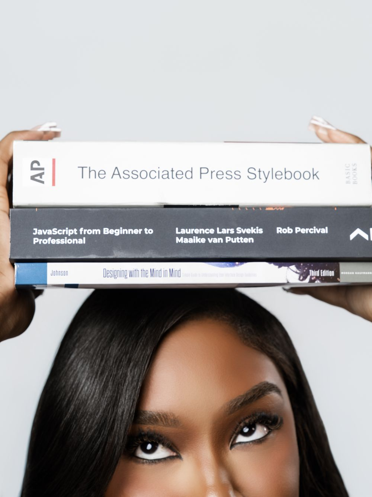
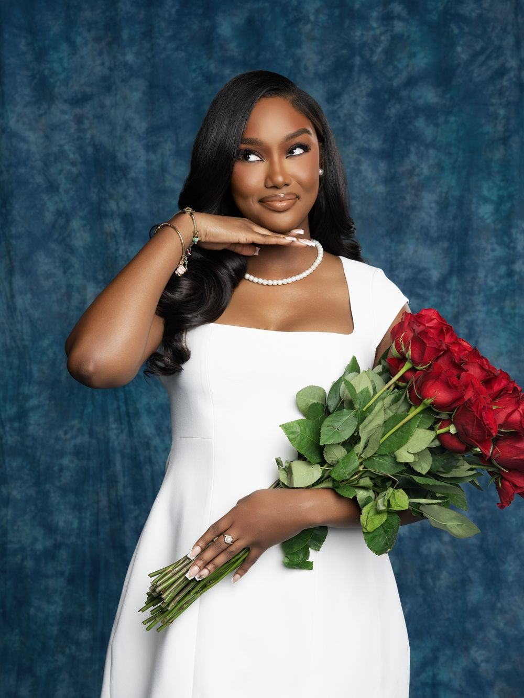

About
Hi, I’m Alisha
I’m a UX/UI designer and researcher with a master’s in HCI, and I think good design sits where creativity, communication and actually understanding people meet.



A little more about me
With a background in communications, marketing and visual storytelling, I’ve always been drawn to finding creative ways to connect ideas with people. UX gave me somewhere to put that: understanding users, identifying problems, and turning what I learn into experiences that are intuitive, accessible and worth using.
I like the whole process, from research and ideation through wireframing, prototyping and usability testing. Accessibility is the part I keep coming back to. I’m working toward IAAP certification, and I have started treating contrast, keyboard paths and screen reader order as part of the design rather than a pass at the end.
Before all of this I was a reporter. A year of interviewing strangers on deadline turns out to be excellent training for user research: you learn to ask the second question, sit through a silence, and write down what people actually said rather than what you hoped they would say.
Outside of UX you’ll find me making content, volunteering, running a church social media page, or learning a new programming language so I can turn a good idea into something people can use.
The path here
Not a straight line, and that is the point
-
2024 to 2026
M.S. Human-Computer Interaction
DePaul University
Usability testing, contextual inquiry, evaluation methods, prototyping, and a completed capstone building a tool for patients and caregivers. Focus in VR/AI and accessibility.
-
2025 to present
Marketing Project Coordinator
TYM North America HQ
The social calendar and the strategy behind it, and the vendors who produce everything from graphics to print to giveaway items. Event planning for domestic and international guests, and sitting with our B2B customers to help them write and caption their own posts. The habit of reporting on what a campaign actually did came from here.
-
2023 to 2025
Assistant Athletic Director
Stockbridge High School
Operations, events and communications for a whole athletics program, with the website and digital comms on top. Several projects running at once, all with fixed deadlines and real people waiting on them.
-
2023
Director of Communications
Genesis Preparatory Academy
A contract role covering the school’s whole external presence: webmaster, social media manager, weekly newsletters, and everything printed, from shirts and flyers to brochures and business cards. The brief was to lift search visibility and social reach far enough to bring attendance up, and some of that outreach was aimed at at-risk families.
-
2021 to 2022
Reporter
Great Falls Tribune | USA Today
Over 50 stories in a year, mostly education reporting with general assignment on top, two of them picked up by MSNBC. I covered the school board meetings the whole district was waiting on, and learned enough sign language to work with an interpreter and interview a deaf mother and a student. Interviewing people whose lives look nothing like yours, on deadline, is where the research instinct actually comes from.
-
2016 to 2021
B.S. Mass Communications
University of West Georgia
Plus a UX/UI design certificate in 2023, which is where the pivot started.
Contact
What I’m looking for
A UX research role, or a hybrid research and design role, on a team that takes accessibility seriously. I finished my master’s in August 2026 and I’m available now.
If you have something you want understood properly, whether that is a product nobody uses the way you expected or a flow you already suspect is broken, I’d like to hear about it. Email is the fastest way to reach me.